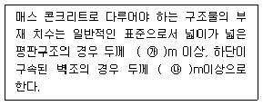
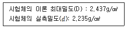
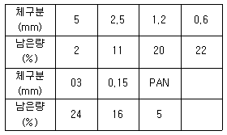
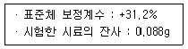
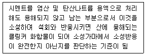
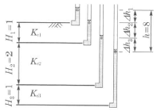
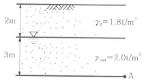
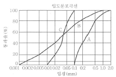
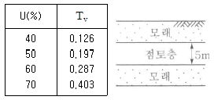

건설재료시험기사 (2015-05-31 기출문제)
1과목: 콘크리트공학
1. 콘크리트 제작 시 재료의 계량에 대한 설명으로 틀린 것은?
- 각 재료는 1배치씩 질량으로 계량하여야 한다.
- 혼화재의 계량 허용오차는 ±2% 이하이다.
- 연속믹서를 사용할 경우, 각 재료는 용적으로 계량해도 좋다.
- 계량은 시방배합에 의해 실시하는 것으로 한다.
(정답률: 86%)

2. 프리플레이스트 콘크리트에 대한 설명으로 틀린 것은?
- 프리플레이스트 콘크리트의 강도는 원칙적으로 재령 28일 또는 재령 91일의 압축강도를 기준으로 한다.
- 굵은 골재의 최대 치수와 최소 치수와의 차이를 크게 하면 굵은 골재의 실적률이 적어지므로 주입모르타르의 소요량이 적어진다.
- 굵은 골재의 최소 치수는 15mm이상으로 하여야 한다.
- 잔골재의 조립률은 1.4~2.2의 범위로 한다.
(정답률: 58%)
3. 콘크리트를 거푸집에 타설한 후부터 응결이 종료할 때까지 발생하는 균열을 초기균열이라고 한다. 다음 중 초기 균열을 올바르게 묶은 것은?
- 침하 수축균열-온도균열
- 침하 수축균열-플라스틱 수축균열
- 플라스틱 수축균열-온도균열
- 플라스틱 수축균열-건조 수축균열
(정답률: 74%)
4. 다음 중 콘크리트의 크리프에 대한 설명으로 잘못된 것은?
- 콘크리트의 크리프란 일정한 지속응력하에 있는 콘크리트의 시간적인 소성변형을 말한다.
- 일반적으로 콘크리트의 크리프는 지속응력이 클수록 크게 된다.
- 조강 시멘트를 사용한 콘크리트는 보통 시멘트를 사용한 경우보다 크리프가 작다.
- 배합 시 시멘트량이 많을수록 크리프가 작다.
(정답률: 64%)
5. 콘크리트 비비기에 관한 설명 중 잘못된 것은?
- 되비비기는 응결이 시작된 이후 다시 비비는 경우로서 강도가 저하한다.
- 연속믹서를 사용할 경우 비비기 시작 후 최초에 배출되는 콘크리트는 사용해서는 안 된다.
- 비비기는 미리 정해 둔 비비기 시간 이상 계속해서는 안 된다.
- 비비기를 시작하기 전에 미리 믹서에 모르타르를 부착시켜야 한다.
(정답률: 81%)
6. 콘크리트의 압축강도 시험값을 기준으로 거푸집널을 해체하고자 할 때 확대기초, 보, 기둥 등의 측면 거푸집널은 압축강도가 얼마 이상인 경우 해체할 수 있는가?(단, 콘크리트표준시방서의 기준값)
- 설계기준압축강도의 1/3배 이상
- 설계기준압축강도의 2/3배 이상
- 5MPa 이상
- 14MPa 이상
(정답률: 68%)
7. 유동화 콘크리트에 대한 설명으로 틀린 것은?
- 유동화 콘크리트의 슬럼프 증가량은 50mm 이하를 원칙으로 한다.
- 유동화 콘크리트를 제조할 때 유동화제를 첨가하기 전의 기본 배합의 콘크리트를 베이스 콘크리트라고 한다.
- 베이스 콘크리트 및 유동화 콘크리트의 슬럼프 및 공기량 시험은 50m3마다 1회씩 실시하는 것을 표준으로 한다.
- 유동화제는 원액으로 사용하고, 미리 정한 소정의 양을 한꺼번에 첨가하여야 한다.
(정답률: 68%)
8. 프리스트레스트 콘크리트의 원리를 설명하는 3가지 방법에 속하지 않는 것은?
- 균등질 보의 개념
- 모멘트 분배의 개념
- 내력 모멘트의 개념
- 하중평형의 개념
(정답률: 71%)
9. 콘크리트의 탄성계수에 대한 설명으로 옳은 것은?
- 일반적으로 콘크리트의 탄성계수라 함은 초기접선계수를 말한다.
- 콘크리트가 물로 포화되어 있을 때의 탄성계수는 건조해 있을 때의 탄성계수보다 작다.
- 콘크리트의 밀도가 클수록 탄성계수값은 크다.
- 콘크리트의 압축강도가 클수록 탄성계수 값은 작다.
(정답률: 49%)
10. 매스 콘크리트에 대한 다음 표의설명에서 빈칸에 알맞은 수치는?

- ㉮ : 0.8, ㉯ : 0.5
- ㉮ : 1.0, ㉯ : 0.5
- ㉮ : 0.5, ㉯ : 0.8
- ㉮ : 0.5, ㉯ : 1.0
(정답률: 79%)
11. 프리스트레스트 콘크리트그라우트에 대한 설명으로 틀린 것은?
- 유동성은 유하시간에 의해 설정하며, 유하시간의 범위는 미리 실험에 의해 정하여야 한다.
- 비팽창성 그라우트에서의 팽창률은 –0.5~0.5%를 표준으로 한다.
- 블리딩률은 5% 이하를 표준으로 한다.
- 물-결합재비는 45%이하로 한다.
(정답률: 87%)
12. 콘크리트의 받아들이기 품질검사에 대한 설명으로 틀린 것은?
- 워커빌리티의 검사는 굵은골재 최대치수 및 슬럼프가 설정치를 만족하는지의 여부를 확인함과 동시에 재료분리 저항성을 외관관찰에 의해 확인하여야 한다.
- 내구성 검사는 공기량, 염소이온량을 측정하는 것으로 한다.
- 콘크리트를 타설하기 전에 실시하여야 한다.
- 강도검사는 압축강도 시험에 의한 검사를 원칙으로 한다.
(정답률: 65%)
13. 섬유보강콘크리트를 사용하였을 때 콘크리트의 성질 중 개선되는 것이 아닌 것은?
- 균열에 대한 저항성
- 내구성 증가
- 내충격성 증가
- 유동성 증가
(정답률: 86%)
14. 다음 중 한중 콘크리트에 적절하지 않은 양생방법은?
- 증기양생
- 전열양생
- 기건양생
- 막양생
(정답률: 58%)
15. 콘크리트의 비파괴 시험 중 초음파법에 의한 균열깊이를 평가하는 방법이 아닌 것은?
- T-법
- Pull-out 법
- Tc-To법
- BS법
(정답률: 77%)
16. 골재의 절대용적이 700ℓ인 콘크리트에서 잔골재율이 40%이고, 잔골재의 표건밀도가 2.65g/cm3이면 단위 잔골재량은 얼마인가?(문제 오류로 가답안 발표시 3번으로 발표되었지만 확장 답안 발표시 모두 정답 처리 되었습니다. 여기서는 가답안인 3번을 누르면 정답 처리 됩니다.)
- 1,113kg/cm3
- 984.6kg/cm3
- 742kg/cm3
- 722.4kg/cm3
(정답률: 72%)
17. 시방배합결과 단위 잔골재량 660kg/cm3, 단위 굵은골재량 1000kg/cm3을 얻었다. 현장골재의 입도만을 고려하여 현장배합으로 수정하면 잔골재와 굵은골재의 양은? (단, 현장 잔골재 : 야적 상태에서 포함된 굵은골재 : 3%, 현장 굵은골재 : 야적 상태에서 포함 된 잔골재 : 4%)
- 잔골재량 : 614kg/cm3, 굵은 골재량 :1,046kg/cm3
- 잔골재량 : 638kg/cm3, 굵은골재량 :1,022kg/cm3
- 잔골재량 : 644kg/cm3, 굵은골재량 :1,016kg/cm3
- 잔골재량 : 667kg/cm3, 굵은골재량 :993kg/cm3
(정답률: 76%)
18. 알칼리골재반응(alkali-aggregate reaction)에 대한 설명 중 틀린 것은?
- 콘크리트 중의 알칼리 이온이 골재 중의 실리카 성분과 결합하여 구조물에 균열을 발생시키는 것을 말한다.
- 알칼리골재반응의 진행에 필수적인 3요소는 반응성 골재의 존재와 알칼리량 및 반응을 촉진하는 수분의 공급이다.
- 알칼리골재반응이 진행되면 구조물의 표면에 불규칙한(거북이등 모양 등)균열이 생기는 등의 손상이 발생한다.
- 알칼리골재반응을 억제하기 위하여 포틀랜드시멘트의 등가알칼리량을 6% 이하의 시멘트를 사용하는 것이 좋다.
(정답률: 63%)
19. 다음 중 콘크리트 배합설계에서 가장 먼저 결정해야 하는 것은?
- 물-결합재 비
- 단위수량
- 골재량
- 혼화재량
(정답률: 72%)
20. 콘크리트의 워커빌리티(workability)를 측정하기 위한 시험방법 중 콘크리트에 일정한 에너지를 가하여 밀도의 변화를 수치적으로 나타내는 시험법은?
- 흐름시험(flow test)
- 슬럼프 시험(slump test)
- 리몰딩 시험(remolding test)
- 다짐계수시험(somfacting factor test)
(정답률: 66%)
2과목: 건설시공 및 관리
21. 지하수 침강 최소깊이 3m, 암거매립간격 10m, 투수계수 10-5㎝/sec라 할 때, 불투수층에 놓인 암거 1m당 1시간 동안의 배수량을 구하면?(단, Donnan식에 의해 산출하시오.)
- 1.3ℓ
- 1.0ℓ
- 1.5ℓ
- 2.0ℓ
(정답률: 31%)
22. 아스팔트 포장의 시공에서 보조기층 마무리 면에 아스팔트 혼합물을 포설하기 직전에 실시하며, 보조기층의 보호 및 수분의 모관상 승을 차단하고, 아스팔트 혼합물과의 접착성을 좋게 하기 위하여 실시하는 것은?
- 택 코트
- 프라임 코트
- 컨솔리데이션 그라우팅
- 커튼 그라우트
(정답률: 74%)
23. 현장타설 콘크리트 말뚝의 장점이 아닌 것은?
- 재료의 운반에 제한을 받지 않는다.
- 소음, 진동이 적어서 도심지 공사에 적합하다.
- 현장 지반중에서 제작 양생되므로 품질 관리가 용이하다.
- 지층의 깊이에 따라 말뚝 길이를 자유로이 조절 가능하다.
(정답률: 73%)
24. PERT 공정관리기법에 관한 설명 중 옳지 않은 것은?
- PERT 기법에서는 시간견적을 3점법으로 확률계산한다.
- PERT 기법의 중심관리는 작업단계 (event)이다.
- PERT 기법은 비용문제를 포함한 반복사업에 이용된다.
- PERT 기법은 신규사업 및 경험이 없는 사업에 적용한다.
(정답률: 70%)
25. 콘크리트 중력댐에 대한 설명으로 옳은 것은?
- 자중이 크므로 견고한 지반이 필요하다.
- 댐의 상단에서 직접 홍수량을 방류하는 형식을 비월류식이라 한다.
- 일종의 필댐이다.
- 댐의 총 자중은 총 수평력보다 작아야 한다.
(정답률: 51%)
26. 공사일수를 3점 시간 추정법에 의해 산정할 경우 적절한 공사 일수는?(단, 낙관일수는 6일, 정상일수는 8일, 비관일수는 10일이다.)
- 6일
- 7일
- 8일
- 9일
(정답률: 79%)
27. 8ton의 덤프트럭에 1.0m3의 버킷을 갖는 백호로 흙을 적재하고자 한다. 흙의 단위중량이 1.6t/m3이고 토량변화율(L)은 1.2이고 버킷계수가 0.9일 때 트럭 1대의 만차에 필요한 백호 적재회수는?
- 6회
- 7회
- 8회
- 9회
(정답률: 60%)
28. 어느 토공현장에서 흙의 운반거리가 60m, 불도저의 전진속도 40m/min, 후진속도 60m/min, 1회의 압토량 2.5m3, 기어 변속시간 0.25분이고, 작업효율 0.65일 때 불도저의 시간당 작업량을 본바닥 토량으로 구하면? (단, 토질은 보통토, 평탄지로 토량의 변화율 C=0.9, L=1.25이다.)
- 27.3m3/h
- 28.4m3/h
- 38.6vm3/h
- 42.4m3/h
(정답률: 59%)
29. Open caisson에 대한 설명으로 틀린 것은?
- 케이슨의 선단부를 보호하고 침하를 쉽게 하기 위하여 curve shoe라 불리우는 날끝을 붙인다.
- 전석과 같은 장애물이 많은 곳에서의 작업은 곤란하다.
- 케이슨의 침하 시 주면마찰력을 줄이기 위해 진동발파공법을 적용할 수 있다.
- 굴착 시 지하수를 저하시키지 않으며, 히빙, 보일링의 염려가 없어 인접 구조물의 침하 우려가 없다.
(정답률: 74%)
30. 발파에 의한 터널공사 시공 중 발파진동 저감대책으로 틀린 것은?
- 정밀한 천공
- 장약량 조절
- 동시발파
- 방진공(무장약공) 수행
(정답률: 85%)
31. 성토높이 7m인 사면에서 비탈구배가 1:1.3일 때 수평거리는?
- 6.2m
- 9.1m
- 9.4m
- 8.3m
(정답률: 79%)
32. 40,000m3(완성된 토량)의 성토를 하는데 유용토가 30,000m3(느슨한 토량)이 있다. 이 때 부족한 토량은 본바닥 토량으로 얼마인가? (단, 토량의 변화율은 L=1.25, C=0.090이다.)
- 7,800m3
- 13,800m3
- 16,200m3
- 20,444m3
(정답률: 64%)
33. 흙막이 굴착공법 중 역타공법은 구조물 본체의 바닥 및 보를 구축한 후 이를 지지구조로 사용하여 직접 흙막이 벽에 걸리는 토압 및 수압을 분담시키면서 굴착을 진행하는 공법이다. 이러한 역타공법에 대한 설명으로 틀린 것은?
- 흙막이의 안정성이 높아진다.
- 지하 굴착깊이가 깊고 구조물의 형태가 일정하지 않을 경우에도 적용이 용이하다.
- 본 구조물의 지보공으로 이용하므로 지보공의 변형, 압력이 적어서 안전하다.
- 1층바닥을 먼저 시공한 후 그곳을 작업바닥으로 유효하게 이용할 수 있으므로 대지의 여유가 없는 경우에 유리하다.
(정답률: 58%)
34. 네트워크 관리도 작성의 기본원칙 가운데 모든 공정은 각각 독립공정으로 간주하며, 모든 공정은 의무적으로 수행되어야 한다는 원칙은?
- 공정원칙
- 단계원칙
- 활동원칙
- 연결원칙
(정답률: 75%)
35. 교대의 명칭 중 구체(main body)를 가장 적절하게 설명한 것은?
- 교량의 일단을 지지하는 것
- 축제의 상부를 지지하여 흙이 교좌에서 무너지는 것을 막는 것
- 상부구조에서 오는 전하중을 기초에 전달하고 배후 구조에 저항하는 것
- 하중을 기초 지반에 넓게 분포시켜 교대의 안정을 도모하는 것
(정답률: 68%)
36. 아스팔트 포장과 콘크리트 포장을 비교 설명 한 것 중 아스팔트 포장의 특징이 아닌 것은?
- 양생기간이 거의 필요 없다.
- 유지 수선이 콘크리트 포장보다 쉽다.
- 주행성이 콘크리트 포장보다 좋다.
- 초기 공사비가 고가이다.
(정답률: 80%)
37. 지하철 공사의 공법에 관한 다음 설명 중 틀린 것은?
- Open cut 공법은 얕은 곳에서는 경제적이나 노면복공을 하는데 지상에서의 지장이 크다.
- 개방형 실드로 지하수위 아래를 굴착할때는 압기할 때가 많다.
- 연속 지중벽 공법은 연약지반에서 적합하고 지수성도 양호하나, 소음 대책이 어렵다.
- 연속 지중벽 공법의 대표적인 것은 이코스 공법, 엘제공법, 솔레턴슈 공법 등이 있다.
(정답률: 75%)
38. 다짐 장비는 다짐의 원리를 이용한 것이다. 다짐기계의 다짐방법의 분류에 속하지 않는 것은?
- 진동식 다짐
- 전압식 다짐
- 충격식 다짐
- 인장식 다짐
(정답률: 74%)
39. 토공에서 시공기면을 정할 경우 성토와 절토량이 최소가 되게 하는 것이 경제적이다. 토공의 균형을 알아내기 위해 사용되는 것은?
- 유토곡선
- 토취곡선
- 균형곡선
- 평균곡선
(정답률: 84%)
40. 다음 중 터널 공사에서 이상지압 원인으로 거리가 먼 것은?
- 편압
- 본바닥 팽창
- 잠재응력 해방
- 토압
(정답률: 46%)
3과목: 건설재료 및 시험
41. 시멘트의 응결에 대한 설명으로 틀린 것은?
- 온도가 높을수록 응결은 빨라진다.
- 습도가 높을수록 응결은 빨라진다.
- 분말도가 높으면 응결은 빨라진다.
- C3A가 많을수록 응결은 빨라진다.
(정답률: 67%)
42. 다음 표와 같은 조건이 주어졌을 때 아스팔트 혼합물에 대한 공극률은?

- 4.2%
- 8.3%
- 5.3%
- 5.8%
(정답률: 55%)
43. 목재의 건조법 중 자연건조법의 종류에 해당 하는 것은?
- 수침법
- 끊임법
- 열기건조법
- 고주파건조법
(정답률: 80%)
44. 다음의 혼화재료 중 주로 잠재수경성이 있는 재료는?
- 팽창재
- 고로 슬래그 미분말
- 플라이 애시
- 규산질 미분말
(정답률: 69%)
45. 화강암의 일반적인 특징에 대한 설명으로 틀린 것은?
- 조직이 균일하고 내구성 및 강도가 크다.
- 내화성이 풍부하여 내화구조물용으로 적당하다.
- 경도 및 자중이 커서 가공 및 시공이 어렵다.
- 균열이 적기 떄문에 큰 재료를 채취할 수 있다.
(정답률: 77%)
46. 화약류 취급 및 사용 시의 주의점에 대한 설명으로 틀린 것은?
- 뇌관과 폭약은 항상 동일장소에 식별이 용이토록 구분하여 보관함으로서 손실로 인한 작업의 중단이 없도록 하여야 한다.
- 장기간 보관 시는 온도나 습도에 의해 변질하지 않도록 하고 흡수하여 동결하지 않도록 해야 한다.
- 도화선과 뇌관의 이음부에 수분이 침투하지 못하도록 기름 등을 도포해야 한다.
- 도화선을 삽입하여 뇌관에 압착할 때 충격이 가해지지 않도록 해야 한다.
(정답률: 67%)
47. 잔골재에 대한 체가름 시험을 실시한 결과 각체에 남은량(질량백분율, %)은 다음 표와 같다. 이 골재의 조립률은? (단, 10mm 이상 체잔량은 0이다.)

- 2.60
- 2.73
- 2.77
- 3.73
(정답률: 63%)
48. 목재의 주성분으로서 목질건조 중량의 60%정도를 차지하며, 세포막을 구성하는 성분은?
- 리그닌
- 타닌
- 셀룰로오스
- 수지
(정답률: 61%)
49. 최대 치수가 20mm 정도인 굵은골재로 체가름 시험을 하고자 할 경우 시료의 최소 건조 질량으로 옳은 것은?
- 1kg
- 2kg
- 3kg
- 4kg
(정답률: 61%)
50. 토목섬유 중 지오텍스타일의 기능을 설명한 것으로 틀린 것은?
- 배수 : 물이 흙으로부터 여러 형태의 배수로로 빠져나갈 수 있도록 한다.
- 보강 : 토목섬유의 인장강도는 흙의 지지력을 증가시킨다.
- 여과 : 입도가 다른 두 개의 층 사이에 배치될 때 침투수가 세립토층에서 조립토 층으로 흘러갈 때 세립토의 이동을 방지한다.
- 혼합 : 도로 시공 시 여러 개의 흙층을 혼합하여 결합시키는 역할을 한다.
(정답률: 67%)
51. 금속재료에 대한 설명으로 틀린 것은?
- 알루미늄은 비금속재료이다.
- 금속재료는 열전도율이 크다.
- 금속재료는 내식성이 크다.
- 주철은 금속재료이다.
(정답률: 53%)
52. 고무혼입 아스팔트와 스트레이트 아스팔트를 비교한 설명 중 옳지 않은 것은?
- 감온성은 고무혼입 아스팔트가 작다.
- 마찰계수는 고무혼입 아스팔트가 크다.
- 응집성은 스트레이트 아스팔트가 크다.
- 충격저항성은 스트레이트 아스팔트가 작다.
(정답률: 39%)
53. 콘크리트용 응결촉진제에 대한 설명으로 틀린 것은?
- 조기강도를 증가시키지만 사용량이 과다하면 순결 또는 강도저하를 나타낼 수 있다.
- 한중 콘크리트에 있어서 동결이 시작되기 전에 미리 동결에 저항하기 위한 강도를 조기에 얻기 위한 용도로 많이 사용한다.
- 염화칼슘을 주성분으로 한 촉진제는 콘크리트의 황산염에 대한 저항성을 증가시키는 경향을 나타낸다.
- PSC강재에 접촉하면 부식 또는 녹이 슬기 쉽다.
(정답률: 61%)
54. 표준체 45㎛에 의한 시멘트 분말도 시험에 의한 결과가 다음의 표와 같을 때 시멘트의 분말도는?

- 73.6%
- 81.2%
- 88.5%
- 91.7%
(정답률: 35%)
55. 다음 중 급결제를 사용해야 하는 경우는?
- 레디믹스트 콘크리트의 운반거리가 멀 경우
- 서중 콘크리트를 시공할 경우
- 연속 타설에 의한 콜트 조인트를 방지하기 위해
- 숏크리트 타설 시
(정답률: 77%)
56. 아스팔트의 성질에 대한 설명 중 틀린 것은?
- 아스팔트의 비중은 침입도가 작을수록 작다.
- 아스팔트의 비중은 온도가 상승할수록 저하된다.
- 아스팔트는 온도에 따라 컨시스턴시가 현저하게 변화된다.
- 아스팔트의 강성은 온도가 높을수록, 침입도가 클수록 작다.
(정답률: 61%)
57. 콘크리트용으로 사용하는 굵은골재의 안정성은 황산나트륨으로 5회 시험을 하여 평가한다. 이때 손실 질량은 몇 % 이하를 표준으로 하는가?
- 5%
- 7%
- 10%
- 12%
(정답률: 61%)
58. 르샤틀리에 비중병의 0.5cc 눈금까지 광유를 주입하고 시료로 시멘트 64g을 가하여 눈금이 23cc로 증가되었을 때 이 시멘트의 비중은?
- 3.04
- 3.08
- 2.84
- 3.16
(정답률: 74%)
59. 다음의 표에서 설명하는 시멘트 관련 용어는?

- 석회포화도
- 수경률
- 강열감량
- 불용해잔분
(정답률: 73%)
60. 황색의 미세한 결정으로 기폭약 중에서 가장 강력한 폭약으로 폭발력은 TNT와 동일하고 발화점은 약 180도 정도인 기폭약은?
- 뇌산수은
- DDNP
- 질화납
- 칼릿
(정답률: 58%)
4과목: 토질 및 기초
61. 어느 흙 댐의 동수경사 1.1, 흙의 비중이 2.65, 함수비 45%인 포화토에 있어서 분사현상에 대한 안전율을 구하면?
- 0.7
- 1.0
- 1.2
- 1.4
(정답률: 30%)
62. 굳은 점토지반에 앵커를 그라우팅하여 고정시켰다. 고정부의 길이가 5m, 직경 20cm, 시추공의 직경은 10cm이었다. 점토의 비배수전단강도(Cu)=1.0kg/cm2, ø-=0°이고 할 때 앵커의 극한 지지력은?(단, 표면마찰계수는 0.7으로 가정한다.)
- 9.4ton
- 15.7ton
- 21.98ton
- 31.3ton
(정답률: 35%)
63. Sand drain의 지배영역에 관한 Barron의 정삼각형 배치에서 샌드 드레인의 간격을 d, 유효원의 직경을 de라 할 때 de 구하는 식으로 옳은 것은?
- de=1.128d
- de=1.028d
- de=1.⑤0d
- de=1.50d
(정답률: 68%)
64. 어느 점토의 체가름 시험과 액∙소성시험 결과 0.002mm(2㎛)이하의 입경이 전시료 중량의 90%, 액성한계 60%, 소성한계 20%이었다. 이 점토 광물의 주성분은 어느 것으로 추정되는가?
- Kaolinite
- Illite
- Calcite
- Montmorillonite
(정답률: 52%)
65. 응력경로(stress path)에 대한 설명으로 옳지 않은 것은?
- 응력경로는 특성상 전응력으로만 나타 낼 수 있다.
- 응력경로란 시료가 받는 응력의 변화과정을 응력공간에 궤적으로 나타낸 것이다.
- 응력경로는 Mohr의 응력원에서 전단응력이 최대인 점을 연결하여 구해진다.
- 시료가 받는 응력상태에 대해 응력경로를 나타내면 직선 또는 곡선으로 나타내어진다.
(정답률: 51%)
66. 10m 깊이의 쓰레기층을 동다짐을 이용하여 개량하려고 한다. 사용할 해머 중량이 40t, 하부면적 반경 2m의 원형 블록을 이용하였다면, 해머의 낙하고는?
- 15m
- 10m
- 25m
- 23m
(정답률: 37%)
67. 어떤 점토지반의 표준관입 시험 결과N값이 2~4이었다. 이 점토의 consistency는?
- 대단히 견고
- 연약
- 견고
- 대단히 연약
(정답률: 53%)
68. △h1=5이고, Kv2=10Kv1일 때, Kv3의 크기는?

- 1.0Kv1
- 1.5Kv1
- 2.0Kv1
- 2.5Kv1
(정답률: 40%)
69. Rod에 붙인 어떤 저항체를 지중에 넣어 관입, 인발 및 회전에 의해 흙의 전단강도를 측정하는 원위치 시험은?
- 보링(boring)
- 사운딩(sounding)
- 시료채취(sampling)
- 비파괴 시험(NDT)
(정답률: 63%)
70. 평판 재하 실험에서 재하판의 크기에 의한 영향(scale effect)에 관한 설명으로 틀린 것은?
- 사질토 지반의 지지력은 재하판의 폭에 비례한다.
- 점토지반의 지지력은 재하판의 폭에 무관하다.
- 사질토 지반의 침하량은 재하판의 폭이 커지면 약간 커지기는 하지만 비례하는 정도는 아니다.
- 점토지반의 침하량은 재하판의 폭에 무관하다.
(정답률: 53%)
71. 어떤 점토의 토질시험 결과 일축압축강도 0.45kg/cm2, 단위중량 1.7t/m3이었다. 이 점토의 한계고는?
- 6.34m
- 4.87m
- 9.24m
- 5.29m
(정답률: 38%)
72. 2m×2m 정방형 기초가 2.0m 깊이에 있다. 이 흙의 단위중량 γ=1.7t/m3, 점착력 c=0이며, Nγ=19, Nq=22이다. Terzaghi의 공식을 이용하여 전허용하중(Qall)을 구한 값은? (단, 안전율 Fs=3으로 한다.)
- 27.3t
- 54.6t
- 81.9t
- 134.2tt
(정답률: 45%)
73. 약액주입공법은 그 목적이 지반의 차수 및 지반보강에 있다. 다음 중 약액주입공법에서 고려해야 할 사항으로 거리가 먼 것은?
- 주입률
- Piping
- Grout 배합비
- Gel Time
(정답률: 58%)
74. 유선망의 특징을 설명한 것으로 옳지 않은 것은?
- 각 유로의 침투유량은 같다.
- 유선과 등수두선은 서로 직교한다.
- 유선망으로 이루어지는 사각형은 이론상 정사각형이다.
- 침투속도 및 동수구배는 유선망의 폭에 비례한다.
(정답률: 55%)
75. 연약점토지반에 성토제방을 시공하고자 한다. 성토로 인한 재하속도가 과잉간극수압이 소산되는 속도보다 빠를 경우, 지반의 강도정수를 구하는 가장 적합한 시험방법은?
- 압밀 배수시험
- 압밀 비배수시험
- 비압밀 비배수시험
- 직접전단시험
(정답률: 59%)
76. 그림과 같은 점성토 지반의 토질실험결과 내부마찰각 ø=32°, 점착력 c=1.6t/m2일 때 A점의 전단강도는?

- 5.72t/m2
- 5.95t/m2
- 6.38t/m2
- 7.04t/m2
(정답률: 50%)
77. γsat=2.0t/m3인 사질토가 30˚로 경사진 무한사면이 있다. 지하수위가 지표면과 일치하는 경우 이 사면의 안전율이 1 이상이 되기 위해서는 흙의 내부마찰각이 최소 몇 도 이상이어야 하는가?
- 18.21°
- 20.52°
- 49.1°
- 45.47°
(정답률: 41%)
78. 다음과 같은 흙의 입도분포곡선에 대한 설명으로 옳은 것은?

- A는 B보다 유효경이 작다.
- A는 B보다 균등계수가 작다.
- C는 B보다 균등계수가 크다.
- B는 C보다 유효경이 크다.
(정답률: 50%)
79. 그림과 같은 5m 두께의 포화점토층이 10t/m2의 상재하중에 의하여 30cm의 침하가 발생하는 경우에 압밀도는 약 U=60%에 해당하는 것으로 추정되었다. 향후 몇 년이면 이 압밀도에 도달하겠는가? (단, 압밀계수(CV=3.6×10-4cm2/sec)

- 약 1.3년
- 약 1.6년
- 약 2.2년
- 약 2.4년
(정답률: 50%)
80. 현장 흙의 단위중량을 구하기 위해 부피 500cm3의 구멍에서 파낸 젖은 흙의 무게가 900g이고, 건조시킨 후의 무게가 850g이다. 건조한 흙 450g을 몰드에 가장 느슨한 상태로 채운 부피가 280cm3이고, 진동을 가하여 조밀하게 다진 후의 부피는 210cm3이다. 흙의 비중이 2.7일 때 이 흙의 상대밀도는?
- 33%
- 38%
- 21%
- 48%
(정답률: 29%)